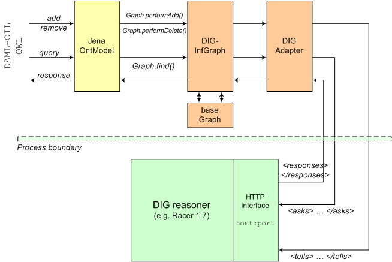

Index
The built-in Jena rule-based reasoners are able to provide semantic entailments for ontologies using OWL-lite, and some constructs from OWL-DL and OWL-full. However, for large or complex ontologies the rule-based approach is computationally very expensive. Moreover, there are useful modelling primitives in OWL-DL that many semantic-web applications will wish to make use of. Jena's architecture provides a mechanism for attaching external reasoners to Jena models, by re-implementing the Graph interface. Jena version 2.1 onwards provides an illustration of this technique by providing a transparent gateway between Jena ontology models and external reasoners implementing the DIG description logic reasoner interface (henceforth abbreviated simply to the DIG interface).
The DIG interface is an emerging standard for providing access to description-logic reasoning via an HTTP-based interface to a separate reasoning process. Available DIG reasoners at the time of writing include: Racer, FaCT and Pellet. In principle, Jena should work with any conformant DIG reasoner (but see note below). The current release has only been tested with Racer, version 1.7.19. Note that earlier versions of Racer will not work with the Jena DIG adapter, as a number of bugs in Racer's DIG implementation were fixed during the development process.
Figure 1 shows an overview of the connection between a Jena ontology model and an existing DIG reasoner process.

Figure 1: Schematic of dataflows between Jena model and DIG reasoner
Two things should be clear from Figure 1. The first is that accessing a DIG reasoner in Jena is
identical to accessing a normal model. That is, the normal model API is used to, for example,
list the classes in the model or determine the properties of an individual. Moreover, the information
inferred by the reasoner is available as RDF triples. So, if the reasoner determines that a class
A is unsatisfiable, the triple :A rdfs:subClassOf owl:Nothing
will appear in the model. The second thing that Figure 1 shows is that the DIG adapter must
be told the host name and port number for accessing the HTTP interface of the reasoner.
In Jena, a reasoner is an object that creates instances of an inference graph
(InfGraph)
that is able to produce additional triples based on the triples
asserted in the base graph. This is shown in Figure 1: the base graph is maintained on the
Jena side (i.e. client-side); when a triple is added to a model backed by a DIG reasoner
it is first asserted into the base graph. This allows Jena programs access to the raw data,
as well as the inferred data. For example, it is typically only the contents of the base graph that is
written out when the model is serialized.
To create a DIGReasoner
object that can bind a base graph to an external reasoner,
we invoke the DIGReasonerFactory. The full syntax for doing this is:
DIGReasonerFactory drf = (DIGReasonerFactory) ReasonerRegistry.theRegistry()
.getFactory( DIGReasonerFactory.URI );
DIGReasoner r = (DIGReasoner) drf.create( null );
Since this is quite verbose, a short-cut exists:
DIGReasoner r = (DIGReasoner) ReasonerRegistry.theRegistry().create( DIGReasonerFactory.URI, null );
However, note that there are circumstances when the longer form is required (see below).
The null parameter passed to the create call is an optional
configuration
Resource.
To pass configuration parameters to the reasoner, such
as a non-default host or port address for connecting to the reasoner, properties are attached
to a resource and passed in to the create call.
Note that a DIG reasoner does not necessarily have built-in knowledge of the common semantic-web
ontology languages (such as OWL and DAML+OIL). The DIG encoding language is neutral to such
specific encodings. This presents a problem when working with OWL and DAML, as some facts are
assumed to be common knowledge (for example the fact that owl:TransitiveProperty
is an owl:ObjectProperty). The Jena rule reasoner handles this requirement by
defining specific rules for the common-knowledge language axioms. This is not an option for
the Jena DIG reasoner (a model that relied on both internal and external reasoners would be
complex indeed!). Instead, we provide an option to create a DIG reasoner with a specific set
of axioms built-in to the model. These are provided by variants to the create()
call:
createWithDAMLAxioms(Resource configuration)
createWithOWLAxioms(Resource configuration). Thus, to create a DIG reasoner
specialised for OWL usage, with configuration parameters attached to the resource
config we would use:
DIGReasonerFactory drf = (DIGReasonerFactory) ReasonerRegistry.theRegistry()
.getFactory( DIGReasonerFactory.URI );
DIGReasoner r = (DIGReasoner) drf.createWithOWLAxioms( config );
It may be noted that creating a reasoner with pre-loaded axioms in this way precludes the use of the short-cut form.
A Jena OntModel provides a convenience API for working with semantic web ontology sources.
To bind an OntModel to the DIG reasoner, we create an ontology model spec that includes
the DIG reasoner created above. A typical pattern (assuming reasoner r has
already been created, see above) is:
OntModelSpec spec = new OntModelSpec( OntModelSpec.OWL_DL_MEM ); spec.setReasoner( r ); OntModel m = ModelFactory.createOntologyModel( spec, null );
Ontology model m can then be used in the normal way. If a large model is to be
prepared, it may sometimes be more efficient to create the model first, with no reasoner, then
bind that model to the reasoner to create the inference model. A typical pattern is:
OntModel base = ModelFactory.createOntologyModel( OntModelSpec.OWL_DL_MEM, null ); // ... build or load the model contents ... OntModelSpec spec = new OntModelSpec( OntModelSpec.OWL_DL_MEM ); spec.setReasoner( r ); OntModel m = ModelFactory.createOntologyModel( spec, base );
The DIG reasoner can be configured by passing configuration properties attached
to a config resource when invoking create() on the reasoner factory.
The following table shows the configuration parameters recognised by the DIG reasoner.
Note that the prefix rConf: is defined as
http://jena.hpl.hp.com/2003/JenaReasoner#, and that vocabulary constants
are available from the
ReasonerVocabulary
class in Java.
| URI | Vocabulary constant | Meaning |
|---|---|---|
rConf:extReasonerURL |
EXT_REASONER_URL |
Specifies the URL of the connection to the reasoner. Only the hostname and port
are used. Default value is http://localhost:8081. |
rConf: extReasonerOntologyLang |
EXT_REASONER_ONT_LANG |
A URI that specifies the ontology language (OWL or DAML) that will be used with the reasoner.
The URI constants are available from the ProfileRegistry. Default is OWL. |
rConf:extReasonerAxioms |
EXT_REASONER_AXIOMS |
Specifies a URL for a set of axioms to load into the reasoner to support the ontology language being used. Default value is none. |
The following program shows a complete example of using the DIG reasoner, with a non-default
URL to connect to. We assume that the DIG reasoner has been started on port 2004 (e.g.
with racer -http 2004).
import com.hp.hpl.jena.ontology.*;
import com.hp.hpl.jena.rdf.model.*;
import com.hp.hpl.jena.reasoner.ReasonerRegistry;
import com.hp.hpl.jena.reasoner.dig.*;
import com.hp.hpl.jena.vocabulary.*;
public class DIGExample
{
public static void main( String[] args ) {
// set up a configuration resource to connect to the reasoner
// on port 2004 on the local system
Model cModel = ModelFactory.createDefaultModel();
Resource conf = cModel.createResource();
conf.addProperty( ReasonerVocabulary.EXT_REASONER_URL,
cModel.createResource( "http://localhost:2004" ) );
// create the reasoner factory and the reasoner
DIGReasonerFactory drf = (DIGReasonerFactory) ReasonerRegistry.theRegistry()
.getFactory( DIGReasonerFactory.URI );
DIGReasoner r = (DIGReasoner) drf.create( conf );
// now make a model
OntModelSpec spec = new OntModelSpec( OntModelSpec.OWL_DL_MEM );
spec.setReasoner( r );
OntModel m = ModelFactory.createOntologyModel( spec, null );
// load an input document
m.read( "http://protege.stanford.edu/plugins/owl/owl-library/koala.owl" );
// list the inconsistent classes
StmtIterator i = m.listStatements( null, OWL.equivalentClass, OWL.Nothing );
while (i.hasNext()) {
System.out.println( "Class " + i.nextStatement().getSubject() + " is unsatisfiable" );
}
}
}
The output produced by this program was:
Class http://protege.stanford.edu/plugins/owl/owl-library/koala.owl#KoalaWithPhD is unsatisfiable Class 2d9c06:fca384780f:-7ff4 is unsatisfiable Class http://protege.stanford.edu/plugins/owl/owl-library/koala.owl#Koala is unsatisfiable Class http://protege.stanford.edu/plugins/owl/owl-library/koala.owl#Quokka is unsatisfiable
The second value is Jena's anonymous node (bNode) identifier for a class expression from the input document that intersects with Koala, which is itself unsatisfiable.
The DIG interface should be regarded as experimental for the time being. The most extensive testing has been performed with OWL as the input language and Racer as the reasoning engine. Other reasoners, or the use of DAML+OIL as the input language, are provided for in the code but not well tested yet. Users are encouraged to report problems and suggestions to the Jena support list.
Note also that DIG itself is an immature standard. Some parts of OWL-DL cannot be expressed in the DIG tell language, and some desirable queries are not possible. An ongoing discussion about improving DIG is continuing on the DIG-users list, hosted by SourceForge.
CVS $Id: dig-reasoner.html,v 1.1 2004-05-20 19:24:53 ian_dickinson Exp $